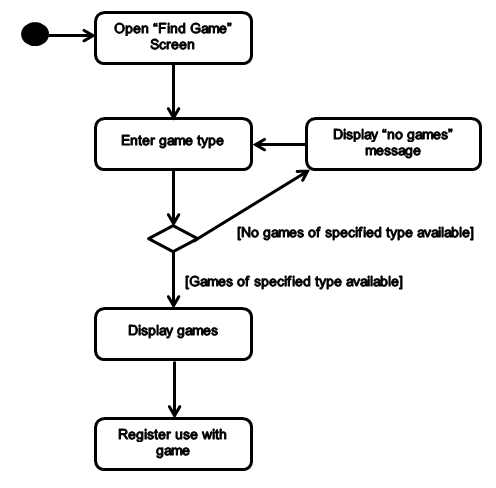

Pocket Pickup
Use Cases
Team Poseidon
Sergey Naumets (snaumets@cs)
Victor Farkas (vfarkas@cs)
Jacob Gile (jjgile@cs)
Patrick Larson (palarson@cs)
Kane Swanson (kane@cs, kdswan@uw)
Isaiah Mathieu (imathieu@cs)
Overview
The following seven use cases represent the most common tasks that the users are expected to perform. The first five, which involve creating, finding, leaving, and checking in to a game, are the core features of our application because they are what facilitate pickup sports games. The last two, log in and sign up, are essential for users to begin using the service.
Failure-handling is represented in the alternate flow of these use cases.
Find a Game
Brief Description
The user selects a game by querying the game scheduler. If no games match the query, the users is prompted to search again.
Preconditions
The user is logged on to the system.
Basic Flow
- Users selects the "Find game" screen
- User enters a kind of game
- The system presents a list of games of the desired kind
- 2 and 3 may be repeated
-
- The user selects a game
- The game scheduler registers the user with a game
Alternate Flow: Games not found
- If at 2 in Find a Game, no games are found
- The system displays the message "0 games found"
- The use case starts at 2) in find a game
Postcondition
The user is registered with a game
Activity Diagram

Leave a Game
Brief Description
The user leaves a game by updating the game schedule
Preconditions
The user is logged on to the system.
Basic Flow
- User selects the game they wish to leave on the main map
- The system presents game information with an option to leave
- The User selects the leave game option
- The game scheduler unregisters the user with the game
-
- 5) The user selects a game
- 6) The game scheduler registers the user with a game
Postcondition
The user is no longer registered with a selected game game
Activity Diagram
Create a Game
Brief Description
The user creates a game by updating the game scheduler. If invalid game information is provided, the users is prompted to enter information again.
Preconditions
The user is logged on to the system.
Basic Flow
- The user selects the "create game" screen
- User enters game information
- The user registers the game
Alternate Flow: Games not found
- If at 2) in create a game, some information is invalid:
- The system displays an error message
- The use case restarts at 2) in create a game
Postcondition
A new game is registered in the game scheduler
Activity Diagram
Signup
Brief Description
The user registers a new profile with the profile manager. This occurs during the first use of the app on a new phone via Facebook
Preconditions
The user has not logged on to the system via facebook before..
Basic Flow
- The user selects the log in screen
- The user input a username and password
- The user is prompted via facebook to confirm login credentials
- The system adds a new user profile with the information
-
Postcondition
The profile manager is updated with a new profile
Activity Diagram
Login
Brief Description
The user associates their device with a profile.
Preconditions
The user is not logged on to the system but already has an account linked via Facebook.
Basic Flow
- The user selects the login button
- The system registers the user as logged with their device
- The user is prompted via facebook to confirm login credentials
- The system adds a new user profile with the information
-
Postcondition
The user’s device is registered with their profile.
Activity Diagram